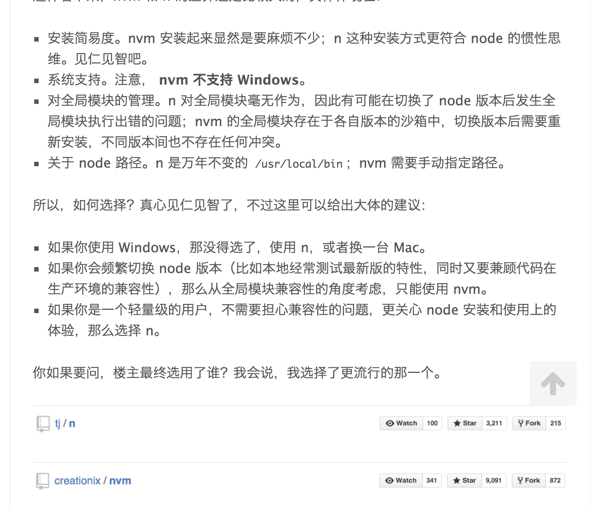

npm 常用命令
# 查看包的安装路径
npm root eslint-plugin-html
/Users/hajnal/WorkSpace/h5Edit/editor/client/node_modules
# 全局包安装路径
~ % npm root -g
/usr/local/lib/node_modules
# 重新指定安装路径
npm config set prefix /usr/local
# 查看全局安装了哪些包
npm list -g --depth=0
# 查看npm包的版本
npm list @skpm/builder
skytree@0.1.0 /Users/hajnal/skytree
└── @skpm/builder@0.5.10
# 查看npm包全局版本
npm list xxx -g
# 安装n工具
sudo npm install -g n
# 清除node.js的cache
sudo npm cache clean -f
# 安装稳定版
sudo n stable
# 更新npm到最新版
npm i -g npm
node -v
npm -v
# 更新 npm 包
npm install -g npm-check-updates
# 更新node版本
err: asyncWrite is not a function
sudo npm cache clean -f
# node 安装的目录
~ % where node
/Users/hajnal/.nvm/versions/node/v11.4.0/bin/node
#设置npm源
npm config set registry https://registry.npm.taobao.org
nrm add mogu http://npm.f2e.mogujie.org/
scripts
- prepublish
prepublish这个钩子不仅会在npm publish命令之前运行，还会在npm install（不带任何参数）命令之前运行。这种行为很容易让用户感到困惑，所以 npm 4 引入了一个新的钩子prepare，行为等同于prepublish，而从 npm 5 开始，prepublish将只在npm publish命令之前运行。
npm包本地调试
- npm 包目录
npm link - 项目目录
npm link skytree-node
npm 版本号管理 X.Y.Z
- 如果只是修复bug，需要更新Z位。
- 如果是新增了功能，但是向下兼容，需要更新Y位。
- 如果有大变动，向下不兼容，需要更新X位。
nvm or n?
brew install nvm
# 安装完成后，必须在你的 .bash_profile 加入以下这行，让你可以直接在shell使用nvm指令
export NVM_DIR="$HOME/.nvm"
[ -s "$NVM_DIR/nvm.sh" ] && . "$NVM_DIR/nvm.sh" # This loads nvm
export NVM_DIR="$HOME/.nvm"
. "/usr/local/opt/nvm/nvm.sh"
$ source ~/.bash_profile
